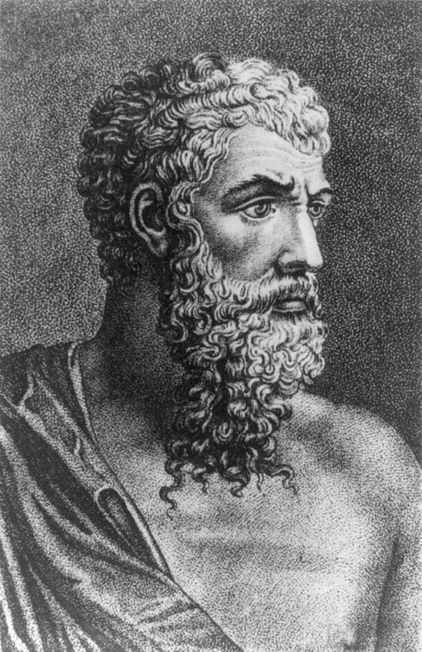

ბერძნული თეატრი არის ხელოვნების სახეობა, რომელიც დიდი გავლენის ქვეშ მოექცა მსოფლიო თეატრალურ ტრადიციას. ის წარმოიშვა ბერძნულ ძველი დროის რელიგიური ცერემონიებიდან, განსაკუთრებით დიონისეს, ღვინის და ნაყოფიერების ღმერთის, ქადაგებიდან.

ბერძნული თეატრი არის ხელოვნების სახეობა, რომელიც დიდი გავლენის ქვეშ მოექცა მსოფლიო თეატრალურ ტრადიციას. ის წარმოიშვა ბერძნულ ძველი დროის რელიგიური ცერემონიებიდან, განსაკუთრებით დიონისეს, ღვინის და ნაყოფიერების ღმერთის, ქადაგებიდან.
ტრაგედია იყო ბერძნული თეატრის ძირითადი ჟანრი. ის ხშირად მოიცავდა ღრმა და ფილოსოფიურ თემებს, როგორიცაა სიძულვილი, უბედურება, ანტიკური გმირები და მათი შიდა კონფლიქტები. ტრაგედიაში ხშირად განიხილებოდა გმირების უშეცდომო თვისებები, რომლებიც ვნებებითა და შეცდომებით იწვევდნენ მათი წარუმატებლობას.
კომედია იყო მსუბუქი და ხანდახან სარკასტული, რომელიც ხატავდა საზოგადოებრივ ანპრეტენზიულ პრობლემებს. ბერძნული კომედია ხშირად შეიცავდა მკაცრ სოციალურ და პოლიტიკურ კრიტიკას და აღწერდა ჩვეულებრივი ადამიანის დღიურ პრობლემებს.
ეჰილიუსი იყო ერთ-ერთი პირველი ტრაგიკოსი, რომელმაც დრამატული კონფლიქტის იდეა დაამკვიდრა. ის მოამზადა ბერძნული თეატრის სტრუქტურას და შთაბეჭდილება მოახდინა ტრაგედიის განვითარებაზე. მისი ცნობილი ნაწარმოებები, როგორიცაა "ადამიანი ზეცა", დრამატულად რთული და ემოციურად სენსიტიური იყო.
სოფოკლე იყო ერთ-ერთი ყველაზე ცნობილი ტრაგიკოსი, რომელიც წერდა გრამატიკულსა და ფსიქოლოგიურ თვალსაზრისით რთულ ნაწარმოებებს. მისი ყველაზე ცნობილი ნაწარმოები "ოიდიპოს მეფე" (Oedipus Rex) დღესაც განიხილება ბერძნული ტრაგედიის პიკად. ის იყო იმ ეპოქის დიდი ფილოსოფიური წარმოდგენების კვალდაკვალ.

არისტოფანე იყო ბერძნული კომედიის თვალსაზრისით განთქმული ავტორი. მისი ნაწარმოებები, რომლებიც ხშირ შემთხვევაში პოლიტიკური და სოციალური კრიტიკით გამოირჩეოდა, საკმაოდ მასშტაბური იყო. მისი კომედიები ხშირად ეხებოდა სიღარიბეს, ომებს, პოლიტიკას და მასთან დაკავშირებულ პრობლემებს.
ბერძნული თეატრი მნიშვნელოვან როლს ასრულებდა არა მხოლოდ გართობაში, არამედ საზოგადოებრივ დისკურსში. თეატრალური წარმოდგენები წარმოადგენს ყველანაირად გასაგებ ხერხს ფილოსოფიური და პოლიტიკური კითხვების განხილვისთვის. ისინი ხშირად ასახავდნენ რეალურ სოციალურ და პოლიტიკურ პრობლემებს, რამაც დიდი გავლენა მოახდინა ბერძნული საზოგადოების აზროვნებასა და კულტურაზე.
გარდა ამისა, ბერძნული თეატრის გავლენა არ შეჩერებულა მხოლოდ იმ პერიოდზე; ის ძალიან მნიშვნელოვანი ფაქტორია თანამედროვე თეატრალური ტრადიციების შექმნაში.